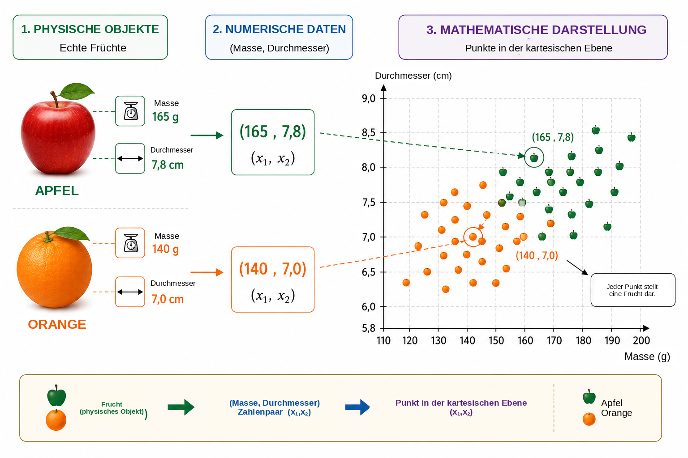
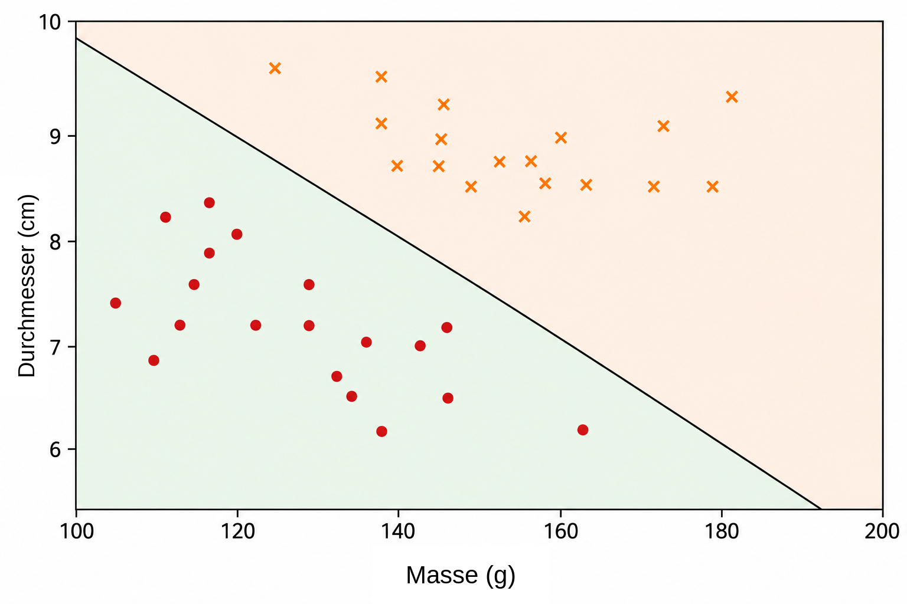
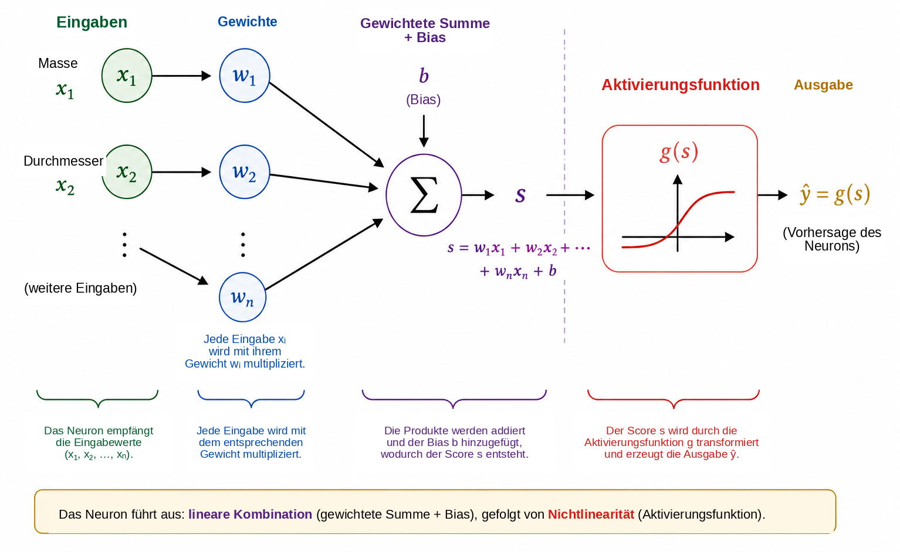
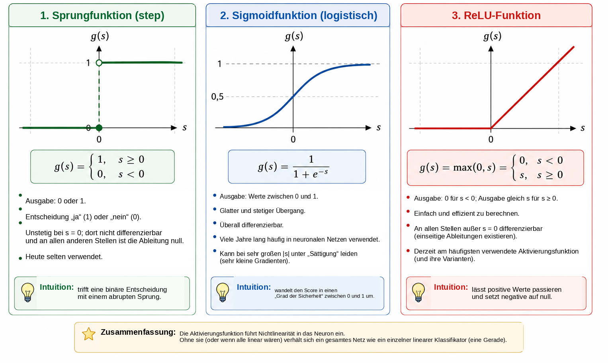
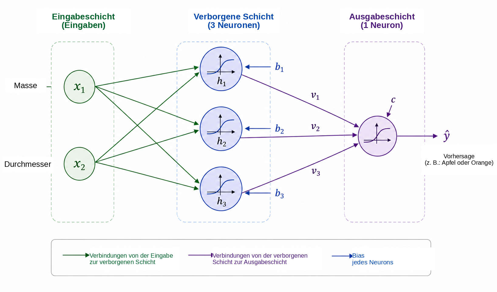
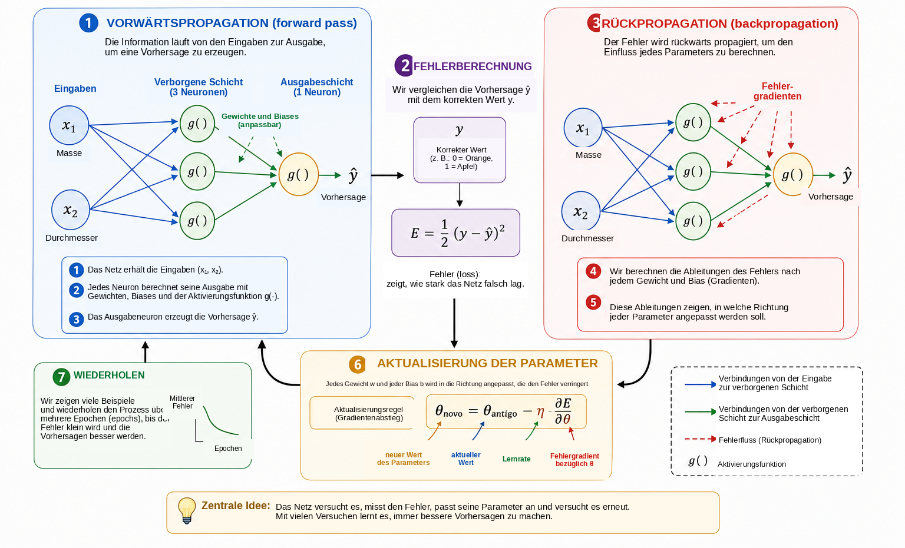
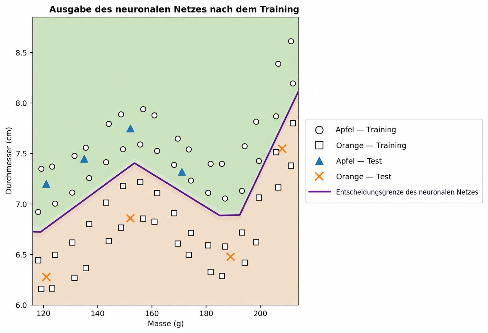

Wann kann ein Computer lernen?
Im Alltag treffen wir Klassifikationsentscheidungen fast ohne es zu bemerken. Beim Betrachten einer Frucht erkennen wir schnell, ob es sich um einen Apfel oder eine Orange handelt; wenn eine Nachricht auf dem Telefon eingeht, unterscheiden wir eine legitime Unterhaltung von unerwünschter Werbung; in der medizinischen Analyse können mehrere Messgrößen kombiniert werden, um eine Entscheidung zu unterstützen; und in Finanzinstituten werden zahlreiche Informationen ausgewertet, bevor ein Kredit gewährt wird. In all diesen Beispielen werden mehrere Merkmale gemeinsam betrachtet, um eine Antwort zu erzeugen.
In vielen traditionellen Computerprogrammen werden die Regeln, die zu dieser Antwort führen, vom Programmierer ausdrücklich vorgegeben. Dieser Ansatz funktioniert gut, wenn die Regeln bekannt sind und klar formuliert werden können. Er wird weniger wirksam, wenn die Daten stark variieren oder wenn es schwierig ist, im Voraus jede Bedingung zu formulieren, die für eine gute Entscheidung erforderlich ist. Daraus ergibt sich eine natürliche Frage:
Können wir ein Programm konstruieren, das eine Entscheidungsregel
aus
Beispielen lernt, anstatt die Regel im Voraus zu erhalten?
Dies ist eine der zentralen Ideen des maschinellen Lernens, eines Teilgebiets der künstlichen Intelligenz, das sich mit Verfahren beschäftigt, die Modelle aus Daten anpassen . Bei einem Problem des überwachten Lernens erhält der Algorithmus Beispiele zusammen mit den korrekten Antworten, und wir suchen ein Modell, das auch für Fälle sinnvolle Vorhersagen liefern kann, die beim Training nicht verwendet wurden. Unter den zahlreichen zu diesem Zweck entwickelten Modellen haben künstliche neuronale Netze große Bedeutung in Anwendungen wie Bilderkennung, Sprachverarbeitung, Signalanalyse und Zeitreihenprognose erlangt .
Die Verwendung neuronaler Netze als Brücke zwischen Mathematik, Informatik und schulischer Bildung wurde in Professor de Matemática Online bereits von Batista und Martins diskutiert; dort wird eine Aktivität zur Lehrkräftebildung mit Python und Ziffernerkennung vorgestellt. Der vorliegende Beitrag verfolgt einen ergänzenden Weg. Unser Hauptziel besteht darin, die innere Mathematik eines kleinen neuronalen Netzes offenzulegen, beginnend mit analytischer Geometrie und schrittweise fortschreitend bis zur Gradientenberechnung und zu einer manuellen Implementierung der Rückpropagation.
Trotz der Komplexität moderner Anwendungen lässt sich der mathematische Kern eines neuronalen Netzes mit vergleichsweise vertrauten Ideen einführen. Grundsätzlich ist ein neuronales Netz eine Verkettung von Funktionen, deren Parameter anhand von Daten angepasst werden. Wir beginnen mit einem einfachen geometrischen Problem, interpretieren eine Trennlinie als künstliches Neuron neu, verbinden mehrere Neuronen, untersuchen die Rolle von Aktivierungsfunktionen und zeigen, wie Ableitungen zur automatischen Anpassung der Netzparameter verwendet werden können. Anschließend implementieren wir ein vollständiges kleines Beispiel in Python und halten dabei eine direkte Entsprechung zwischen den Gleichungen und dem Code aufrecht.
Mathematische Darstellung des Problems
Um zu verstehen, wie ein neuronales Netz funktioniert, beginnen wir mit einem bewusst einfachen Problem: Äpfel von Orangen zu unterscheiden. Eine Frucht besitzt viele Merkmale, die für diese Aufgabe nützlich sein könnten, etwa Farbe, Masse, Durchmesser, Textur und Aroma. Ein erstes mathematisches Modell muss jedoch nicht diese gesamte Komplexität berücksichtigen. Wir verwenden nur zwei leicht messbare Größen: die Masse in Gramm und den Durchmesser in Zentimetern.
Jede Frucht wird daher durch ein geordnetes Paar dargestellt, \[(x_1,x_2),\] wobei \[x_1=\text{Masse} \qquad\text{und}\qquad x_2=\text{Durchmesser}.\]
Das Paar \((155,\;7.2)\) repräsentiert somit eine Frucht mit einer Masse von \(155\) g und einem Durchmesser von \(7.2\) cm. Indem wir das physische Objekt durch zwei numerische Messwerte ersetzen, ordnen wir jeder Frucht einen Punkt in der kartesischen Ebene zu: Die erste Koordinate gibt ihre Masse, die zweite ihren Durchmesser an. Abbildung 1 veranschaulicht diese Darstellung für eine hypothetische Menge von Äpfeln und Orangen.

Diese Transformation verändert den scheinbaren Charakter des Problems. Anstatt direkt zu fragen, wie man einen Apfel oder eine Orange erkennt, können wir eine geometrische Frage stellen: Wie lassen sich die zu den beiden Klassen gehörenden Punkte in der Ebene trennen? Dieser Perspektivwechsel ist im maschinellen Lernen grundlegend. Bilder, Texte, Klänge und experimentelle Signale müssen in numerische Darstellungen umgewandelt werden, bevor ein Algorithmus sie verarbeiten kann. In unserem Beispiel besitzt jedes Objekt nur zwei Koordinaten; in realen Anwendungen kann eine Darstellung Hunderte, Tausende oder sogar Millionen von Komponenten enthalten. Das Prinzip bleibt dasselbe: Jedem Beispiel wird eine Sammlung von Zahlen zugeordnet, und das Modell sucht eine Regel, die diese Darstellung auf die gewünschte Antwort abbildet.
Wir beginnen mit der einfachsten verfügbaren geometrischen Regel und fragen, ob eine einzige Gerade die Apfelpunkte hinreichend von den Orangenpunkten trennen kann.
Eine Gerade als Klassifikator
Sobald jede Frucht durch einen Punkt in der kartesischen Ebene dargestellt ist, wird die Klassifikation zu einem geometrischen Problem: Kann eine Gerade die Äpfel von den Orangen trennen? Diese Frage erfasst die Grundidee einer wichtigen Familie von Verfahren des maschinellen Lernens, die als lineare Klassifikatoren bezeichnet werden.
Betrachten wir eine Gerade, die die Punktwolke durchquert, wie in Abbildung 2 dargestellt. Die Gerade teilt die Ebene in zwei Halbebenen. Liegen die meisten Apfelpunkte auf der einen und die meisten Orangenpunkte auf der anderen Seite, kann die Lage einer neuen Frucht relativ zur Geraden als Klassifikationsregel verwendet werden. Nach der Messung von Masse und Durchmesser stellen wir die Frucht durch einen Punkt dar und bestimmen, auf welcher Seite der Geraden sich dieser Punkt befindet.

In der kartesischen Ebene \((x_1,x_2)\) kann eine Gerade beschrieben werden durch \[w_1x_1+w_2x_2+b=0, \qquad (w_1,w_2)\neq(0,0).\]
Der Vektor \((w_1,w_2)\) steht senkrecht auf der Geraden und bestimmt daher ihre Orientierung, während der Parameter \(b\) zu ihrer Lage beiträgt. Diese Darstellung besitzt eine kleine Redundanz: Multipliziert man \(w_1\), \(w_2\) und \(b\) mit derselben von null verschiedenen Konstante, erhält man genau dieselbe Gerade. Daher sind die Parameter, die die Grenze beschreiben, nicht eindeutig. Auch ihre numerische Interpretation hängt von der Skalierung der Variablen ab. Da die Masse in Gramm und der Durchmesser in Zentimetern gemessen werden, sollten die Zahlenwerte von \(w_1\) und \(w_2\) nicht ohne Berücksichtigung der unterschiedlichen Einheiten miteinander verglichen werden.
Die Geradengleichung selbst liefert eine einfache Möglichkeit zu bestimmen, auf welcher Seite der Grenze ein Punkt liegt. Definieren wir den Score \[s(x_1,x_2)=w_1x_1+w_2x_2+b.\]
Gilt \(s(x_1,x_2)=0\), so liegt der Punkt auf der Geraden. Für \(s(x_1,x_2)>0\) liegt er in der einen Halbebene; für \(s(x_1,x_2)<0\) in der anderen. Legen wir fest, dass positive Scores Äpfeln und negative Scores Orangen entsprechen, so lautet die Regel \[\begin{cases} s(x_1,x_2)\geq 0 & \Longrightarrow \text{Apfel},\\ s(x_1,x_2)<0 & \Longrightarrow \text{Orange}. \end{cases}\]
Betrachten wir beispielsweise die durch \[w_1=\frac{1}{10}, \qquad w_2=2, \qquad b=-30.\] Für eine Frucht mit einer Masse von \(160\) g und einem Durchmesser von \(7.8\) cm gilt \[\begin{aligned} s &=\frac{1}{10}\times160+2\times7.8-30\\ &=16+15.6-30\\ &=1.6. \end{aligned}\] Da der Score positiv ist, liegt der Punkt in der Halbebene, die wir den Äpfeln zugeordnet haben. Dieser Klassifikator würde die Frucht daher als Apfel kennzeichnen.
Nicht jede Wahl von \(w_1\), \(w_2\) und \(b\) ergibt eine gute Klassifikation. Manche Geraden trennen die beiden Gruppen schlecht, während andere weniger Fehler machen. Das Lernproblem besteht genau darin, bereits beschriftete Beispiele zu verwenden, um Parameterwerte zu bestimmen, die ein Maß für den Modellfehler verringern. Anstatt die Lage der Geraden direkt zu programmieren, soll der Algorithmus ihre Koeffizienten anhand der Daten anpassen.
Eine einzelne Gerade kann gut funktionieren, wenn die Klassen annähernd linear trennbar sind. Komplexere Datensätze können eine nichtlineare Grenze erfordern. Bevor wir diese Einschränkung behandeln, interpretieren wir den soeben konstruierten Klassifikator als elementare Recheneinheit neu: ein künstliches Neuron.
Das künstliche Neuron
Im vorherigen Abschnitt wurde der Ausdruck \[s=w_1x_1+w_2x_2+b\] verwendet, um zu bestimmen, auf welcher Seite einer Geraden eine Frucht liegt. Derselbe Ausdruck kann als erste Stufe der Berechnung eines künstlichen Neurons betrachtet werden. Ein Neuron erhält numerische Eingaben, kombiniert sie mithilfe von Gewichten und einem Bias und wendet anschließend eine mathematische Funktion an, um seine Ausgabe zu erhalten.
In unserem Beispiel sind die Eingaben die Masse \(x_1\) und der Durchmesser \(x_2\). Jede Eingabe wird mit einem Parameter multipliziert, der Gewicht genannt wird; die Produkte werden zusammen mit einem konstanten Term \(b\), dem Bias, addiert. Abbildung 3 zeigt diese Berechnung schematisch.

Die Gewichte bestimmen, wie Änderungen der Eingaben den Score beeinflussen. Werden \(x_2\) und alle übrigen Größen festgehalten, verändert eine Variation \(\Delta x_1\) den Score \(s\) um \(w_1\Delta x_1\). Entsprechend verändert eine Variation \(\Delta x_2\) den Score um \(w_2\Delta x_2\). Auch das Vorzeichen ist wichtig: Bei einem positiven Gewicht erhöht eine Zunahme der Eingabe den Score, bei einem negativen Gewicht entsteht der gegenteilige Effekt. Diese Interpretation ist mit Vorsicht zu verwenden, wenn verschiedene Variablen unterschiedliche Einheiten und Skalen besitzen. Deshalb werden Eingabedaten in praktischen Implementierungen vor dem Training häufig normalisiert oder standardisiert.
Der Bias \(b\) ist der konstante Term der affinen Transformation. Geometrisch erlaubt er eine Verschiebung der Entscheidungsgrenze. Für \(b=0\) erzwingt die Gleichung \[w_1x_1+w_2x_2=0\] dass die Gerade durch den Ursprung verläuft. Mit einem Bias kann die Grenze an andere Positionen verschoben werden. Äquivalent gilt für \(x_1=x_2=0\) einfach \(s=b\).
Der Score muss nicht die endgültige Ausgabe des Neurons sein. Im Allgemeinen wird darauf eine Aktivierungsfunktion \(g\) angewandt: \[\widehat{y}=g(s)=g\left(w_1x_1+w_2x_2+b\right).\] Die Berechnung erfolgt somit in zwei Stufen, \[\begin{aligned} s &= w_1x_1+w_2x_2+b,\\[4pt] \widehat{y} &= g(s). \end{aligned}\]
Mit den Parameterwerten aus dem vorherigen Abschnitt ergibt sich \(s=1.6\). Wählen wir die Sprungfunktion \[g(s)= \begin{cases} 1, & s\geq0,\\ 0, & s<0, \end{cases}\] so ist \(\widehat{y}=g(1.6)=1\). Nach unserer Konvention wird die Frucht als Apfel klassifiziert. Bei dieser Aktivierung ändert sich die Entscheidung, wenn \(s\) den Wert null überschreitet; die Klassengrenze ist daher genau \[w_1x_1+w_2x_2+b=0.\]
Ein einzelnes Neuron ist somit ein einfaches mathematisches Objekt mit anpassbaren Parametern. Seine eigentliche Bedeutung entsteht durch die Verbindung vieler solcher Einheiten. Bevor wir jedoch ein Netz aufbauen, müssen wir verstehen, warum die Aktivierungsfunktion wesentlich ist.
Warum brauchen wir eine Aktivierungsfunktion?
Ein Neuron berechnet zunächst mithilfe einer affinen Transformation einen Score und wendet erst danach eine Aktivierungsfunktion an. Diese zweite Stufe ist wesentlich, wenn ein neuronales Netz komplexe Zusammenhänge darstellen soll. Um zu verstehen warum, stellen wir uns ein Netz ohne Aktivierungsfunktionen vor. Jede Einheit hätte dann die Form \[y=w_1x_1+w_2x_2+b.\]
Zur eindimensionalen Veranschaulichung nehme man an, eine erste Einheit erzeuge \[h=ax+b\] und eine zweite berechne \[y=ch+d.\] Durch Einsetzen erhält man \[y=c(ax+b)+d=acx+(cb+d),\] was weiterhin eine affine Funktion von \(x\) ist. Dasselbe gilt in mehreren Dimensionen: Eine Verkettung affiner Transformationen ist wiederum affin. Das Hinzufügen vieler Schichten ohne nichtlineare Operation macht das Netz daher nicht grundsätzlich ausdrucksstärker; die gesamte Verkettung könnte durch eine einzige affine Transformation ersetzt werden.
Eine Aktivierungsfunktion durchbricht diese Einschränkung. Nach der Berechnung des Scores \(s\) wendet das Neuron eine meist nichtlineare Abbildung an, \[h=g(s).\] Werden mehrere solcher Einheiten verbunden, lässt sich die entstehende Verkettung nicht mehr auf eine einzige affine Transformation reduzieren. Dadurch kann das Netz komplexere Entscheidungsgrenzen konstruieren.
Die einfachste Aktivierung ist die Sprungfunktion, \[g(s)= \begin{cases} 1, & s\geq0,\\ 0, & s<0. \end{cases}\] Sie erzeugt eine binäre Entscheidung und ist sehr nützlich, um Klassifikation zu verstehen. Ihre Ableitung ist jedoch für \(s\neq0\) gleich null und bei \(s=0\) nicht definiert. Da gradientenbasierte Trainingsverfahren Ableitungen verwenden, um zu bestimmen, wie sich die Parameter ändern sollen, ist die Sprungfunktion für diesen Trainingsmechanismus nicht geeignet.
Eine Alternative ist die Sigmoidfunktion, \[\sigma(s)=\frac{1}{1+e^{-s}}.\] Sie bildet jede reelle Zahl auf einen Wert strikt zwischen \(0\) und \(1\) ab. Für stark negative Werte von \(s\) nähert sich die Ausgabe \(0\), für stark positive Werte nähert sie sich \(1\); zwischen diesen Extremen verläuft der Übergang glatt. Die Sigmoidfunktion ist überall differenzierbar, mit \[\sigma'(s)=\sigma(s)\bigl(1-\sigma(s)\bigr).\] Da ihre Ausgaben zwischen \(0\) und \(1\) liegen, wird sie häufig in der Ausgabeschicht eines binären Klassifikators verwendet. In einer probabilistischen Formulierung mit einer geeigneten Verlustfunktion kann die Ausgabe als Schätzung der Wahrscheinlichkeit der durch \(1\) repräsentierten Klasse interpretiert werden. In verborgenen Schichten kann die Sigmoidfunktion jedoch Schwierigkeiten verursachen: Bei Eingaben mit großem Betrag wird ihre Ableitung sehr klein und trägt damit zum Problem verschwindender Gradienten in tiefen Netzen bei.
Eine häufig verwendete Aktivierung für verborgene Schichten ist die ReLU (Rectified Linear Unit), \[\operatorname{ReLU}(s)=\max(0,s) = \begin{cases} 0, & s<0,\\ s, & s\geq0. \end{cases}\] Obwohl sie aus zwei linearen Teilstücken besteht, ist ReLU global nicht linear. Ihre Ableitung ist \(0\) für \(s<0\) und \(1\) für \(s>0\). Bei \(s=0\) existiert die gewöhnliche Ableitung nicht, und Softwareimplementierungen verwenden eine Konvention für den Gradienten. Für positive Eingaben wird die Ableitung mit wachsendem \(s\) nicht kleiner; damit wird einer der Sättigungsmechanismen der Sigmoidfunktion vermieden.
Abbildung 4 vergleicht diese drei Aktivierungen anschaulich: den abrupten Sprung der Sprungfunktion, den glatten Übergang der Sigmoidfunktion und den Steigungswechsel der ReLU.

Ihre wichtigsten Eigenschaften sind nachfolgend zusammengefasst.
| Funktion | Ausgabe | Ableitung | Typische Verwendung |
|---|---|---|---|
| Sprungfunktion | \(\{0,1\}\) | Null für \(s\neq0\); bei \(s=0\) nicht definiert | Historische Modelle und didaktische Beispiele |
| Sigmoid | \((0,1)\) | Existiert für jedes \(s\) | Ausgabeschicht bei binärer Klassifikation |
| ReLU | \([0,\infty)\) | \(0\) für \(s<0\) und \(1\) für \(s>0\) | Verborgene Schichten |
Die Einzelheiten dieser Funktionen unterscheiden sich, doch ihre gemeinsame konzeptionelle Rolle besteht darin, Nichtlinearität einzuführen. Diese Nichtlinearität ermöglicht es dem kleinen Netz im nächsten Abschnitt, Zusammenhänge darzustellen, die eine einzelne Gerade nicht erfassen kann.
Für Leserinnen und Leser, die weitergehen möchten, bietet Haykin eine klassische Darstellung neuronaler Netze, während Goodfellow, Bengio und Courville Aktivierungsfunktionen und das Training tiefer Netze in einem breiteren Rahmen behandeln. Nielsens frei verfügbarer Text ist besonders zugänglich, um Intuition für Neuronen, Aktivierungen und Lernen zu entwickeln.
Aufbau eines kleinen neuronalen Netzes
Wir betrachten nun ein Netz mit zwei Eingaben, einer verborgenen Schicht mit drei Neuronen und einem Ausgabeneuron. Die Eingaben bleiben \[x_1=\text{Masse}, \qquad x_2=\text{Durchmesser},\] und beide werden jedem Neuron der verborgenen Schicht zugeführt, wie in Abbildung 5 dargestellt.

Bezeichnen wir die Ausgaben der verborgenen Schicht mit \(h_1\), \(h_2\) und \(h_3\). Jedes Neuron erhält dieselben zwei Eingaben, besitzt jedoch eigene Gewichte und einen eigenen Bias: \[\begin{aligned} h_1&=g\left(w_{11}x_1+w_{12}x_2+b_1\right),\\[4pt] h_2&=g\left(w_{21}x_1+w_{22}x_2+b_2\right),\\[4pt] h_3&=g\left(w_{31}x_1+w_{32}x_2+b_3\right). \end{aligned}\]
Obwohl alle drei Neuronen dieselbe Masse und denselben Durchmesser erhalten, können sie unterschiedliche Antworten erzeugen, weil ihre Parameter verschieden sind. Während des Trainings werden diese Parameter so angepasst, dass die Zwischenaktivierungen für die Klassifikation nützlich werden.
Die drei Größen \(h_1\), \(h_2\) und \(h_3\) werden anschließend an das Ausgabeneuron weitergegeben, das berechnet \[s_{\mathrm{out}}=v_1h_1+v_2h_2+v_3h_3+c\] und daraus erzeugt \[\widehat{y}=g_{\mathrm{out}}\left(s_{\mathrm{out}}\right).\] Für unser binäres Problem verwenden wir eine sigmoidale Ausgabe: \[\widehat{y}=\sigma\left(v_1h_1+v_2h_2+v_3h_3+c\right), \qquad 0<\widehat{y}<1.\]
Mit \(y=1\) für Apfel und \(y=0\) für Orange ergibt ein Schwellenwert von \(0.5\) die Klassenentscheidung \[\widehat{y}\geq0.5 \Longrightarrow \text{Apfel}, \qquad \widehat{y}<0.5 \Longrightarrow \text{Orange}.\] Werte nahe \(1\) sind daher stark mit Äpfeln verbunden, während Werte nahe \(0\) mit Orangen verbunden sind. Wie bereits erwähnt, erfordert die numerische Interpretation von \(\widehat{y}\) als Wahrscheinlichkeit zusätzliche Annahmen über das Modell und sein Training. Für die hier verwendete Klassifikationsregel genügt es, \(\widehat{y}\) als kontinuierliche Netzausgabe zu betrachten.
Das zentrale Merkmal dieser Architektur ist die Zwischendarstellung \[(x_1,x_2) \longrightarrow (h_1,h_2,h_3) \longrightarrow \widehat{y}.\] Das Netz erhält zwei Merkmale und konstruiert daraus drei neue Größen, bevor es die endgültige Antwort erzeugt. Diese Aktivierungen werden nicht manuell gewählt: Sie hängen von den Gewichten und Biases ab und ändern sich daher beim Training der Parameter.
Trotz seiner geringen Größe besitzt das Netz bereits dreizehn anpassbare Parameter. Die drei verborgenen Neuronen enthalten \[3(2+1)=9\] Parameter, und das Ausgabeneuron trägt weitere \[3+1=4.\] Daher gilt \[9+4=13.\]
Dieselbe Zählung wird in Matrixnotation unmittelbar sichtbar. Definieren wir \[\mathbf{x}= \begin{bmatrix} x_1\\x_2 \end{bmatrix}, \qquad W^{(1)}= \begin{bmatrix} w_{11}&w_{12}\\ w_{21}&w_{22}\\ w_{31}&w_{32} \end{bmatrix}, \qquad \mathbf{b}^{(1)}= \begin{bmatrix} b_1\\b_2\\b_3 \end{bmatrix}.\] Dann kann die verborgene Schicht kompakt geschrieben werden als \[\mathbf{h}=g\left(W^{(1)}\mathbf{x}+\mathbf{b}^{(1)}\right),\] wobei \(g\) komponentenweise wirkt. Für die Ausgabe gilt \[\widehat{y} = \sigma\left(W^{(2)}\mathbf{h}+b^{(2)}\right),\] mit \[W^{(2)}= \begin{bmatrix} v_1&v_2&v_3 \end{bmatrix}.\]
Diese Notation nimmt bereits die Struktur vorweg, die im Python-Programm auftreten wird. Wird eine Frucht am Eingang präsentiert und berechnen wir die aufeinanderfolgenden Aktivierungen bis zur Ausgabe \(\widehat{y}\), führen wir eine Vorwärtspropagation beziehungsweise einen Forward Pass durch. Die zentrale Frage bleibt: Wie lassen sich die dreizehn Parameter automatisch so bestimmen, dass die Vorhersagen zu den Daten passen?
Wie lernt ein neuronales Netz?
Die Gewichte und Biases sind nicht im Voraus bekannt. Sie müssen mithilfe von Beispielen angepasst werden, für die die korrekte Antwort vorliegt. Dieser Prozess heißt Training und lässt sich durch den Zyklus \[\boxed{\text{vorhersagen}} \longrightarrow \boxed{\text{Fehler messen}} \longrightarrow \boxed{\text{Parameter anpassen}} \longrightarrow \boxed{\text{wiederholen}}.\]
Betrachten wir eine Frucht mit einer Masse von \(140\) g und einem Durchmesser von \(7.0\) cm, deren korrekte Klasse Orange ist, also \(y=0\). Nehmen wir an, das Netz gebe zu einem bestimmten Zeitpunkt des Trainings \(\widehat{y}=0.80\) aus. Ein einfaches Maß für die Abweichung zwischen Vorhersage und Zielwert ist der quadratische Fehler \[E=\frac{1}{2}\left(y-\widehat{y}\right)^2.\] Für dieses Beispiel gilt \[E=\frac{1}{2}(0-0.80)^2=0.32.\]
Dieser Ausdruck ist eine Verlustfunktion für ein einzelnes Beispiel. Da es sich um ein Quadrat handelt, gilt \(E\geq0\), und Vorhersagen, die weiter vom Zielwert entfernt sind, werden stärker bestraft. Der Faktor \(1/2\) verändert die Lage des Minimums nicht, vereinfacht jedoch die Ableitungen. Bei binärer Klassifikation werden häufig andere Verlustfunktionen verwendet, insbesondere die Kreuzentropie. Hier verwenden wir den quadratischen Fehler, weil seine Algebra transparent ist und er zur Einführung in Optimierung und Rückpropagation ausreicht .
Enthält die Trainingsmenge \(N\) Beispiele, so ist ein globales Maß der mittlere Verlust \[J=\frac{1}{N}\sum_{i=1}^{N}E_i.\] Jede Vorhersage hängt von den Gewichten und Biases des Netzes ab; daher hängt auch \(J\) von all diesen Parametern ab. Training bedeutet, Parameterwerte zu suchen, für die \(J\) klein wird.
Um den Anpassungsmechanismus zu verstehen, nehmen wir zunächst an, dass alle Parameter bis auf ein einzelnes Gewicht \(w\) festgehalten werden. Dann können wir den Verlust als Funktion \(J=J(w)\) auffassen. Abbildung 6 fasst die grundlegenden Phasen des Trainings zusammen, die wir nun betrachten.

Für Leserinnen und Leser mit wenig Hintergrund in Differentialrechnung kann eine Ableitung hier als Maß der lokalen Sensitivität verstanden werden: Sie gibt an, wie eine kleine Änderung eines Parameters den Verlust tendenziell verändert. Ihr Vorzeichen zeigt, in welcher Richtung die Funktion lokal zunimmt oder abnimmt, während ihr Betrag die Stärke dieser lokalen Änderung misst.
Die Ableitung \[\frac{\partial J}{\partial w}\] gibt die lokale Steigung an. Ist sie positiv, führt eine kleine Erhöhung von \(w\) tendenziell zu einer Erhöhung von \(J\), sodass sich das Gewicht in die entgegengesetzte Richtung bewegen sollte. Ist sie negativ, führt eine Erhöhung von \(w\) lokal tendenziell zu einer Verringerung von \(J\). Beide Fälle werden beschrieben durch \[w_{\mathrm{new}} = w_{\mathrm{old}} - \eta\frac{\partial J}{\partial w},\] Dies ist die Grundidee des Gradientenabstiegs. Die positive Zahl \(\eta\) ist die Lernrate; sie steuert die Schrittweite. Ein sehr kleiner Wert kann das Training langsam machen, während ein übermäßig großer Wert Oszillationen oder Instabilität verursachen kann.
Für ein Netz mit vielen Parametern bezeichne \(\theta\) ein beliebiges Gewicht oder einen Bias. Die Aktualisierung lautet dann \[\theta_{\mathrm{new}} = \theta_{\mathrm{old}} - \eta\frac{\partial J}{\partial\theta}.\] Die Gesamtheit aller partiellen Ableitungen bildet den Gradienten des Verlusts. Geometrisch zeigt der Gradient in die Richtung des stärksten lokalen Anstiegs; der negative Gradient liefert daher eine lokale Abstiegsrichtung.
Wir müssen diese Ableitungen noch berechnen, wenn das Netz aus einer Verkettung mehrerer Funktionen besteht. Während des Forward Pass fließt die Information als \[\text{Eingaben} \longrightarrow \text{verborgene Schicht} \longrightarrow \text{Ausgabe}.\] Um zu bestimmen, wie ein Parameter in einer frühen Schicht den Verlust beeinflusst, verfolgen wir die Abhängigkeitskette mathematisch in umgekehrter Richtung. Dieses Verfahren heißt Rückpropagation. Es ist im Wesentlichen eine systematische und effiziente Anwendung der Kettenregel. Rumelhart, Hinton und Williams liefern eine klassische Referenz für die Popularisierung dieses Verfahrens in Netzen mit verborgenen Schichten; Nielsen gibt eine detaillierte und besonders didaktische Herleitung.
Für eine einfache Abhängigkeitskette, in der \(E\) von \(\widehat{y}\) abhängt, \(\widehat{y}\) von einer Aktivierung \(h\) und diese wiederum von einem Gewicht \(w\), ergibt die Kettenregel \[\frac{\partial E}{\partial w} = \frac{\partial E}{\partial\widehat{y}} \, \frac{\partial\widehat{y}}{\partial h} \, \frac{\partial h}{\partial w}.\] Jeder Faktor beschreibt eine Stufe des Einflusses von \(w\) auf den endgültigen Verlust. Größere Netze enthalten viele solcher Ketten, und die Rückpropagation organisiert die Berechnung so, dass Zwischenableitungen wiederverwendet werden können, anstatt für jeden Parameter getrennt neu berechnet zu werden.
In der Praxis verwendet das Training viele Beispiele. Ein vollständiger Durchlauf durch die Trainingsmenge heißt Epoche. Die Parameter können nach jedem Beispiel aktualisiert werden, wie im später in diesem Beitrag verwendeten didaktischen Programm, oder nach kleinen Gruppen von Beispielen, den Mini-Batches, wie es bei größeren Netzen üblich ist. In beiden Fällen wird der Zyklus aus Vorhersagen, Verlusten, Gradienten und Aktualisierungen über viele Epochen wiederholt.
Eine konkrete Möglichkeit, diese Entwicklung zu veranschaulichen, besteht darin, die Vorhersage für ein festes Beispiel in verschiedenen Trainingsphasen zu verfolgen. Betrachten wir erneut die Frucht mit einer Masse von \(140\) g und einem Durchmesser von \(7.0\) cm, deren korrekte Klasse Orange ist. Tabelle 1 zeigt einen hypothetischen Verlauf. Diese Werte entsprechen keiner bestimmten Ausführung; sie veranschaulichen lediglich den Mechanismus.
| Epoche | Vorhersage \(\widehat{y}\) | Verlust \(E\) | Klassifikation |
|---|---|---|---|
| 1 | 0.86 | 0.37 | Apfel |
| 5 | 0.71 | 0.25 | Apfel |
| 10 | 0.55 | 0.15 | Apfel |
| 20 | 0.31 | 0.05 | Orange |
| 40 | 0.09 | 0.004 | Orange |
Zu Beginn liegt die Ausgabe nahe bei \(1\), und die Frucht wird fälschlicherweise als Apfel klassifiziert. Mit der Anpassung der Parameter sinkt die Vorhersage und überschreitet schließlich den Schwellenwert \(0.5\), wodurch die korrekte Klasse entsteht. Während dieses Prozesses ändern sich die Zahlenwerte der Gewichte und Biases; die Netzarchitektur bleibt unverändert.
Die Verringerung des Verlusts auf den Trainingsdaten ist nicht das endgültige Ziel. Ein nützliches Netz muss auch für Beispiele gute Vorhersagen liefern, die nicht zur Anpassung der Parameter verwendet wurden. Diese Fähigkeit heißt Generalisierung. Passt sich ein Modell zu stark an Besonderheiten der Trainingsmenge an und schneidet bei neuen Daten schlechter ab, sprechen wir von Overfitting. Bei sorgfältigeren Auswertungen werden die Daten gewöhnlich in Trainings-, Validierungs- und Testmengen aufgeteilt: Die erste dient zur Anpassung der Parameter, die zweite unterstützt Entscheidungen während der Modellentwicklung, und die dritte bleibt der abschließenden Bewertung vorbehalten. Ausführlichere Diskussionen zu Generalisierung und Modellevaluation finden sich bei Faceli et al. sowie Goodfellow, Bengio und Courville .
Damit haben wir die mathematische Bedeutung des Lernens in einem neuronalen Netz erreicht. In diesem Kontext bedeutet Lernen, die Parameter einer zusammengesetzten Funktion so anzupassen, dass ein Fehlermaß auf den Daten reduziert wird und das Modell idealerweise auf neue Beispiele generalisiert. Das Netz sagt voraus, berechnet einen Verlust, verwendet Ableitungen, um den Einfluss seiner Parameter auf diesen Verlust zu bestimmen, und führt eine Folge kleiner Korrekturen aus.
Von der Mathematik zu Python
Nun gehen wir von den Gleichungen zu einem ausführbaren Programm
über. Ziel ist nicht die Verwendung einer spezialisierten Bibliothek für
neuronale Netze, sondern die direkte Implementierung der im gesamten
Beitrag entwickelten mathematischen Operationen mit NumPy
. Dadurch
lässt sich Zeile für Zeile erkennen, wie lineare Kombinationen,
Aktivierungsfunktionen, Verlustberechnung, Rückpropagation und
Gradientenabstieg im Code erscheinen.
Für ein überzeugenderes Abschlussbeispiel verwenden wir einen synthetischen Datensatz, der sich über einen größeren Masse–Durchmesser-Bereich erstreckt. Wir arbeiten weiterhin nur mit zwei physikalischen Merkmalen — Masse in Gramm und Durchmesser in Zentimetern —, verteilen nun jedoch \(64\) Trainingsbeispiele über einen breiten Bereich der Ebene und reservieren acht zusätzliche Beispiele für einen illustrativen Test. Die Daten bleiben synthetisch und liegen in plausiblen Bereichen für Äpfel und Orangen. Sie sind so konstruiert, dass eine nichtlineare Entscheidungsgrenze entsteht, ohne alle Punkte in wenigen übermäßig künstlichen Clustern zu konzentrieren.
Die geometrische Idee ist einfach. Wir definieren eine Referenzkurve in der Masse–Durchmesser-Ebene, platzieren Äpfel in zwei Bändern oberhalb dieser Kurve und Orangen in zwei Bändern darunter. Sowohl zur Masse als auch zum Durchmesser werden kleine deterministische Störungen addiert, damit die Beobachtungen einen größeren Bereich einnehmen. Das resultierende Beispiel ist reichhaltiger als die vorherigen Darstellungen: Es enthält mehr Punkte, die Daten verteilen sich über den Bereich, und die geeignete Entscheidungsgrenze ist deutlich stärker gekrümmt als eine Gerade.
Für dieses abschließende Rechenexperiment erweitern wir die verborgene Schicht auf zwölf Neuronen mit ReLU-Aktivierung. Die in den vorherigen Abschnitten untersuchte Struktur bleibt dabei unverändert; lediglich die Fähigkeit des Netzes, eine komplexere Grenze darzustellen, nimmt zu. Anstelle der \(13\) Parameter des didaktischen Netzes mit drei Neuronen verfügen wir nun über \(49\) anpassbare Parameter: \(24\) Gewichte und \(12\) Biases in der ersten Schicht sowie \(12\) Gewichte und einen Bias in der Ausgabeschicht. Die Gleichungen behalten dieselbe Form; nur die Vektoren und Matrizen werden größer.
Das vollständige Programm ist nachfolgend dargestellt.
import numpy as np
import matplotlib.pyplot as plt
from matplotlib.lines import Line2D
def relu(s):
return np.maximum(0, s)
def relu_derivative(s):
return (s > 0).astype(float)
def sigmoid(s):
return 1 / (1 + np.exp(-s))
def base_boundary(m):
return 6.68 + 0.74*np.exp(-((m-155)/20)**2) \
+ 1.50/(1 + np.exp(-(m-202)/5))
def build_data():
masses_1 = np.linspace(118, 212, 16)
masses_2 = masses_1 + np.array([
1.2,-1.1,0.8,-1.3,1.0,-0.8,1.1,-1.0,
1.3,-0.9,0.9,-1.2,1.0,-1.0,0.8,-0.7
])
k = np.arange(16)
a1 = np.column_stack([
masses_1,
base_boundary(masses_1) + 0.22 + 0.05*np.sin(0.8*k)
])
a2 = np.column_stack([
masses_2,
base_boundary(masses_2) + 0.58 + 0.06*np.cos(0.45*k)
])
o1 = np.column_stack([
masses_1,
base_boundary(masses_1) - (0.22 + 0.04*np.cos(0.7*k))
])
o2 = np.column_stack([
masses_2,
base_boundary(masses_2) - (0.55 + 0.05*np.sin(0.5*k))
])
X_train = np.vstack([a1, a2, o1, o2])
y_train = np.array([1.0]*32 + [0.0]*32)
X_test = np.array([
[121.0, 7.20], [135.0, 7.45],
[152.0, 7.75], [171.0, 7.32],
[121.0, 6.28], [152.0, 6.86],
[189.0, 6.48], [208.0, 7.55]
])
y_test = np.array([1,1,1,1,0,0,0,0], dtype=float)
return X_train, y_train, X_test, y_test
def predict(X, mean, std, W1, b1, W2, b2):
Xn = (X - mean) / std
outputs = []
for x in Xn:
h = relu(W1 @ x + b1)
y_hat = sigmoid(W2 @ h + b2)
outputs.append(y_hat)
return np.array(outputs)
X_train, y_train, X_test, y_test = build_data()
mean = X_train.mean(axis=0)
std = X_train.std(axis=0)
Xn = (X_train - mean) / std
rng = np.random.default_rng(42)
W1 = 0.1 * rng.standard_normal((12, 2))
b1 = np.zeros(12)
W2 = 0.1 * rng.standard_normal(12)
b2 = 0.0
eta = 0.05
n_epochs = 6000
history = []
for epoch in range(n_epochs):
for i in rng.permutation(len(Xn)):
x = Xn[i]
target = y_train[i]
z1 = W1 @ x + b1
h = relu(z1)
z2 = W2 @ h + b2
y_hat = sigmoid(z2)
delta2 = (y_hat - target) * y_hat * (1 - y_hat)
dW2 = delta2 * h
db2 = delta2
delta1 = (delta2 * W2) * relu_derivative(z1)
dW1 = np.outer(delta1, x)
db1 = delta1
W1 -= eta * dW1
b1 -= eta * db1
W2 -= eta * dW2
b2 -= eta * db2
errors = []
for x, target in zip(Xn, y_train):
h = relu(W1 @ x + b1)
y_hat = sigmoid(W2 @ h + b2)
errors.append(0.5 * (target - y_hat)**2)
history.append(np.mean(errors))
def make_figure():
masses = np.linspace(116, 214, 500)
diameters = np.linspace(6.0, 8.85, 500)
M, D = np.meshgrid(masses, diameters)
grid = np.column_stack([M.ravel(), D.ravel()])
P = predict(grid, mean, std, W1, b1, W2, b2).reshape(M.shape)
fig, ax = plt.subplots(figsize=(9.2, 6.3))
ax.contourf(
M, D, P,
levels=[0.0, 0.25, 0.50, 0.75, 1.0],
colors=["#f3e0cb", "#ecd5c4", "#dbe7cf", "#cde3bf"],
alpha=0.95
)
ax.contour(M, D, P, levels=[0.5],
colors=["#5a1a8a"], linewidths=2.2)
mask = y_train == 1.0
ax.scatter(X_train[mask,0], X_train[mask,1], marker="o",
s=48, facecolors="white", edgecolors="black",
linewidths=1.1, label="Apfel - Training")
mask = y_train == 0.0
ax.scatter(X_train[mask,0], X_train[mask,1], marker="s",
s=48, facecolors="white", edgecolors="black",
linewidths=1.1, label="Orange - Training")
mask = y_test == 1.0
ax.scatter(X_test[mask,0], X_test[mask,1], marker="^",
s=92, color="#1f77b4", label="Apfel - Test")
mask = y_test == 0.0
ax.scatter(X_test[mask,0], X_test[mask,1], marker="x",
s=110, color="#ff7f0e", linewidths=2.0,
label="Orange - Test")
ax.set_xlabel("Masse (g)")
ax.set_ylabel("Durchmesser (cm)")
ax.set_title("Ausgabe des neuronalen Netzes nach dem Training")
handles = [
Line2D([0],[0], marker='o', markersize=9,
markerfacecolor='white', markeredgecolor='black',
linestyle='None', label='Apfel - Training'),
Line2D([0],[0], marker='s', markersize=9,
markerfacecolor='white', markeredgecolor='black',
linestyle='None', label='Orange - Training'),
Line2D([0],[0], marker='^', markersize=9, color='#1f77b4',
linestyle='None', label='Apfel - Test'),
Line2D([0],[0], marker='x', markersize=10, color='#ff7f0e',
linestyle='None', label='Orange - Test'),
Line2D([0],[0], color='#5a1a8a', lw=2.2,
label='Entscheidungsgrenze des neuronalen Netzes')
]
ax.legend(handles=handles, loc='center left',
bbox_to_anchor=(1.02, 0.5), frameon=True)
fig.tight_layout()
plt.show()Obwohl der Code länger ist als die ersten im Beitrag untersuchten
Gleichungen, bleibt seine Struktur transparent. Die Funktion
build_data() erzeugt automatisch die \(64\) Trainingsbeispiele und die acht
illustrativen Testbeispiele. Anschließend standardisieren wir beide
Variablen gemäß \[x_j^{\ast}=\frac{x_j-\mu_j}{\sigma_j},\]
wobei \(\mu_j\) und \(\sigma_j\) ausschließlich aus der
Trainingsmenge berechnet werden. Dadurch wird verhindert, dass die
Testmenge die Parameteranpassung beeinflusst, und zugleich werden Masse
und Durchmesser auf vergleichbare numerische Skalen gebracht.
Der Forward Pass ändert sich im Wesentlichen nicht. Der einzige Unterschied besteht darin, dass die erste Schicht nun einen Vektor aus zwölf verborgenen Aktivierungen erzeugt. In Matrixnotation gilt \[\mathbf{z}^{(1)}=W^{(1)}\mathbf{x}+\mathbf{b}^{(1)}, \qquad \mathbf{h}=\operatorname{ReLU}(\mathbf{z}^{(1)}),\] \[z^{(2)}=W^{(2)}\mathbf{h}+b^{(2)}, \qquad \widehat{y}=\sigma(z^{(2)}).\] Diese vier Zeilen enthalten weiterhin den mathematischen Kern des Algorithmus. Auch das Training behält die zuvor eingeführte Logik bei: eine Vorhersage berechnen, ihren Fehler messen, Sensitivitätsinformationen mithilfe von Ableitungen rückwärts propagieren und die Parameter durch kleine Schritte des Gradientenabstiegs aktualisieren.
Im Code erscheint die Rückpropagation an der Ausgabeschicht in
delta2 = (y_hat - target) * y_hat * (1 - y_hat)und die Propagation zur verborgenen Schicht in
delta1 = (delta2 * W2) * relu_derivative(z1)darauf folgen die Aktualisierungen aller Gewichte und Biases. Da die Beispiele in jeder Epoche neu gemischt und die Parameter nach jeder Beobachtung aktualisiert werden, ist diese Implementierung eine elementare Form des stochastischen Gradientenabstiegs.
Mit dem hier verwendeten Zufalls-Seed und den gewählten Hyperparametern liegt der endgültige mittlere Verlust in der Größenordnung von \(10^{-5}\) bis \(10^{-4}\), und alle \(64\) Trainingsbeispiele sowie die acht illustrativen Testbeispiele erhalten die erwartete Klassifikation. Dies darf nicht als strenge statistische Leistungsbewertung interpretiert werden: Die Daten sind synthetisch und wurden zu didaktischen Zwecken konstruiert. Ihre Aufgabe besteht darin zu zeigen, wie ein kleines neuronales Netz in einer weniger trivialen Situation eine eindeutig nichtlineare Entscheidungsgrenze lernen kann.
Abbildung 7 zeigt die endgültige Programmausgabe in der Masse–Durchmesser-Ebene. Alle Trainingspunkte sind dargestellt. Die hervorgehobene Kurve ist das Niveau \(\widehat{y}=0.5\) und repräsentiert die vom Netz gelernte Entscheidungsgrenze; die schattierten Bereiche zeigen die beiden vorhergesagten Klassen. Kreise kennzeichnen Trainingsäpfel, Quadrate Trainingsorangen, Dreiecke Testäpfel und Kreuze Testorangen. Die Legende befindet sich außerhalb des Hauptdiagramms, sodass kein Datenpunkt verdeckt wird.

Wir begannen mit einer Geraden, die zwei einfache Punktgruppen trennt, und endeten mit einem reichhaltigeren Rechenbeispiel, in dem durch die automatische Anpassung der Netzparameter eine gekrümmte Grenze entsteht. Der Mathematik wurde nichts Geheimnisvolles hinzugefügt: Die Implementierung organisiert und wiederholt lediglich in größerem Maßstab und mit hoher Geschwindigkeit affine Kombinationen, Aktivierungsfunktionen, Ableitungen, Matrixprodukte und Aktualisierungen durch Gradientenabstieg .
Das gesamte zu diesem Beitrag gehörende Rechenmaterial ist unter https://neuralmath.org verfügbar. Dazu gehören der Code und ein ausführbares Google-Colab-Notebook. Die Seite dient als zentraler Zugang für Leserinnen und Leser, die die Beispiele untersuchen, reproduzieren oder anpassen möchten.